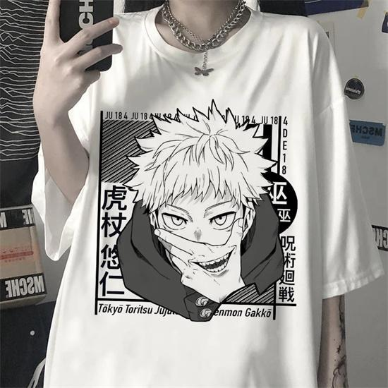

T-shirt jujutsu kaisen
t-shirt en polyester de jujutsu kaisen creer par des bengladais dans des entreprises sous-payé Yuji Itadori est un personnage fictif et le principal protagoniste de la série manga Jujutsu Kaisen créée par Gege Akutami c'est pas chere genre vingt euros prix de la fabrication trentes centimes